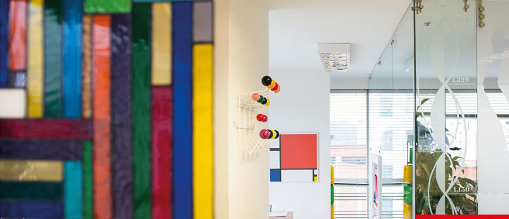
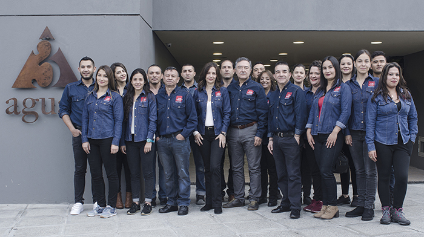
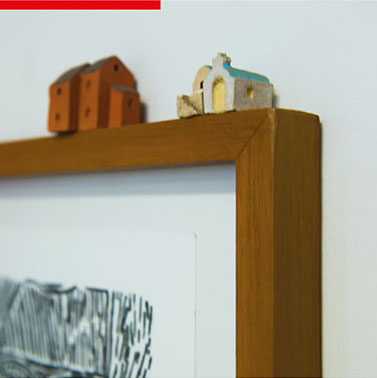

¿Quiénes somos?
Trujillo Gutiérrez & Asociados es una firma creada en Manizales, Colombia en el año 2012, como alianza estratégica entre dos profesionales de amplia trayectoria: Jorge Alberto Gutiérrez Jaramillo y Luz Adriana Trujillo Gálvez. Esta relación entre ingeniería y arquitectura nos permite diseñar y construir proyectos integrales, en los cuales se ofrecen como propuestas de valor la estética, el confort, la seguridad y la eficiencia.

Luz Adriana Trujillo Gálvez
año 1992, Máster en Dirección de Desarrollo Local en el Instituto ISEAD (adscrito a la Universidad Complutense de Madrid España) en el año 2008 y cursó Alta Gerencia en la Universidad de los Andes en el año 2009.
Se ha desempeñado en el sector privado como ingeniera constructora, contratista e interventora. Ha sido fundadora y socia de varias empresas del sector de la construcción:
Se ha desempeñado en el sector privado como ingeniera constructora, contratista e interventora. Ha sido fundadora y socia de varias empresas del sector de la construcción:
- Diseños y Estudios Z. Ltda. 1993-1996.
- Construcciones Zegarra Ltda. 1993-1998.
- Arango Trujillo Ltda. 1998-2002.
- Secretaría de Planeación Municipal de Manizales 2008-2010.
- Latingeniería S.A.S 2011-hasta la fecha.
Jorge Alberto Gutiérrez Jaramillo
Jorge Alberto Gutiérrez Jaramillo, es arquitecto egresado de la Universidad Javeriana de Bogotá; desde 1973 ha sido profesor de diseño arquitectónico y de historia de la arquitectura en la
Universidad Nacional de Colombia, sede Manizales, igualmente ha sido catedrático en la Universidad Nacional sede Bogotá y la Universidad Javeriana de la misma ciudad.
En su cátedra universitaria ha insistido en que el principio ético y rector del ejercicio profesional del arquitecto es su responsabilidad con la ciudad, dado a que esta es por excelencia el sitio ideal para la realización del ser humano y en la necesidad como proyectistas de mantener un diálogo permanente con el lugar, pues este es el soporte de la arquitectura, entendido mucho más allá del hecho físico puesto que lo considera consustancial a la cultura.
Sus actividades principales son el diseño arquitectónico y la docencia universitaria, lo que le ha merecido varias distinciones de la Universidad Nacional, Sociedad Colombiana de
En su cátedra universitaria ha insistido en que el principio ético y rector del ejercicio profesional del arquitecto es su responsabilidad con la ciudad, dado a que esta es por excelencia el sitio ideal para la realización del ser humano y en la necesidad como proyectistas de mantener un diálogo permanente con el lugar, pues este es el soporte de la arquitectura, entendido mucho más allá del hecho físico puesto que lo considera consustancial a la cultura.
Sus actividades principales son el diseño arquitectónico y la docencia universitaria, lo que le ha merecido varias distinciones de la Universidad Nacional, Sociedad Colombiana de
Arquitectos, ocupando además puestos destacados en concursos públicos y privados.
- En 1973 recibe de parte del Consejo Superior de la Universidad Nacional de Colombia, sede Manizales, la distinción académica como “Docente Excepcional”.
- Premio Caldense de Arquitectura, Manizales 2010.
- Premio Caldense de Arquitectura, Manizales 2013.
- Presidente regional, Sociedad Colombiana de Arquitectos, seccional Caldas. Noviembre 1994-Mayo 1999.
- Presidente nacional, Sociedad Colombiana de Arquitectos. Mayo 1999 – Mayo 2001.
- Premio Caldense de Arquitectura, Manizales 2013.
- Secretario de Planeación Municipal de Manizales. Diciembre 2002 – Junio 2005.

Un gran equipo de trabajo
